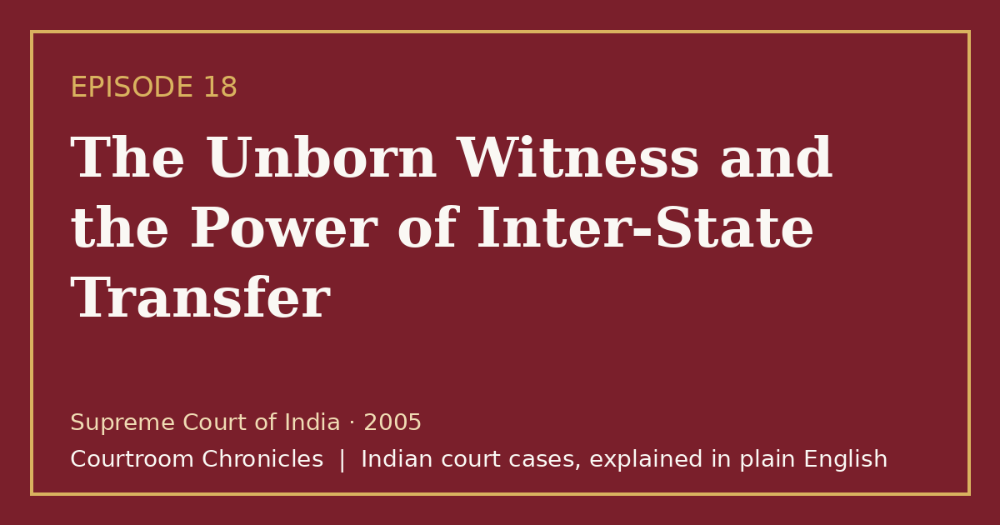

Episode 18 · 2026-10-18
The Unborn Witness and the Power of Inter-State Transfer
When a young poet is shot dead in her apartment, fetal DNA profiling exposes a powerful politician's motive while the Supreme Court transfers the trial to ensure a fair verdict.
Criminal lawEvidenceForensic scienceConstitutional lawProcedure

Listen
- Court
- Supreme Court of India
- Year
- 2005
- Legal Question
- Whether high-ranking political influence and witness intimidation justify transferring a murder trial out of state under Section 406 CrPC
- Key Forensic Evidence
- Fetal DNA paternity profiling matching the seven-month unborn child to the accused cabinet minister
Key takeaways
- Executive rank and political dominance cannot insulate conspirators from rigorous criminal prosecution.
- The Supreme Court will proactively exercise its transfer powers whenever local intimidation imperils fair trial guarantees.
- Fetal DNA profiling provides conclusive forensic evidence that can single-handedly establish intimacy and motive.
- Circumstantial cases fortified by cellular call records and forensic biology can securely sustain life sentences for conspiracy.
The case in brief
In May 2003, a promising twenty-four-year-old poet was shot dead inside her provincial capital apartment by two armed visitors. The preliminary investigation revealed that the victim was seven months pregnant at the time of her assassination. Initial inquiries stalled amid widespread reports of administrative interference, leading the state government to transfer the investigation to the central premier investigative agency.
Central forensic scientists conducted post-mortem STR-DNA testing on fetal tissue samples retrieved during the autopsy, comparing the genetic profile against blood samples obtained from a prominent provincial cabinet minister. The forensic DNA report established conclusive biological paternity, disproving the minister's public denials of an intimate relationship and revealing an urgent motive to silence the victim to avert impending political scandal. Simultaneous telecom analysis uncovered direct call records linking the politician's spouse to the hired shooters.
Due to the minister's immense political stature, witnesses and the deceased's family members faced pervasive threats, coercion, and surveillance inside the home state. Recognizing that a free and impartial administration of justice was completely impossible within the local jurisdiction, the victim's family approached the Supreme Court of India under Section 406 of the Code of Criminal Procedure. The Supreme Court ordered the immediate transfer of the entire trial proceedings to a designated court in a neighboring state.
The transferred special court conducted an exhaustive trial, ultimately convicting the minister, his spouse, and two contract shooters of criminal conspiracy and premeditated murder, sentencing all four to life imprisonment. The high court and the apex court subsequently dismissed their appeals, firmly validating the reliance on fetal genetic paternity evidence to prove motive. The case stands as an iconic precedent demonstrating the judiciary's unyielding commitment to fair trials and the decisive power of forensic genetics.
Timeline
- The Apartment Shooting
A young poet is fatally shot in her residence by two contract killers, sparking widespread public outcry.
- Arrest of the Minister
The central agency arrests the provincial politician after fetal DNA profiling confirms biological paternity.
- Supreme Court Trial Transfer
The Supreme Court transfers the entire murder trial to a neighboring province to prevent witness tampering.
- Special Court Conviction
The transferred sessions court sentences the politician, his spouse, and the shooters to life imprisonment.
What the court decided
The Supreme Court of India allowed the transfer petition under Section 406 CrPC, shifting the murder trial to a neighboring state, where the trial court convicted the minister and accomplices, subsequently affirmed by the appellate courts.
Key holdings
- A reasonable apprehension of a biased trial or pervasive witness intimidation is sufficient ground to transfer a criminal case under Section 406 of the CrPC.
- The purity of the stream of justice and witness safety take precedence over jurisdictional territoriality in criminal proceedings.
- DNA profiling of an unborn fetus is fully admissible under Section 45 of the Evidence Act to establish paternity, intimacy, and criminal motive.
- A conspiratorial agreement hatched in secrecy can be established through telephonic call detail records, financial trails, and subsequent conduct of co-conspirators.
Legal principles
Doctrine of Transfer for Impartial Justice
The Supreme Court has unfettered jurisdiction to transfer criminal trials across state borders whenever powerful political accused threaten fair proceedings.
In this case: The apex court transferred the case from the home state to a neighboring province to shield vulnerable witnesses from executive pressure.
Probative Force of Fetal Genetic Profiling
Scientific DNA analysis establishing parentage provides incontrovertible proof of relationship and an unimpeachable evidentiary foundation for motive.
In this case: The biological match between the politician and the unborn child completely obliterated his defense of alibi and lack of acquaintance.
Proof of Covert Conspiracy by Electronic Metadata
When direct agreements cannot be observed, synchronized telecom call patterns between masterminds and executors substantiate criminal conspiracy.
In this case: Frequent telephone calls between the politician's spouse and the hitmen right before and after the shooting corroborated the unlawful pact.
The law then and now
The murder took place in May 2003, and the trials and appeals were adjudicated under the Indian Penal Code, 1860, the Code of Criminal Procedure, 1973, and the Indian Evidence Act, 1872. The new penal enactments (Bharatiya Nyaya Sanhita, Bharatiya Nagarik Suraksha Sanhita, and Bharatiya Sakshya Adhiniyam) took effect on 1 July 2024 and apply prospectively.
Left: the law applied to this case. Right: the matching provision today (the new criminal codes apply only to offences on or after 1 July 2024).
Substantially unchanged; punishes murder under Chapter VI of the new penal code. See all 16 episodes on this provision →
Consolidated definition and penalty for criminal conspiracy into Section 61. See all 6 episodes on this provision →
- Bharatiya Nagarik Suraksha Sanhita, 2023Section 447Power of Supreme Court to transfer cases and appeals
Preserved the apex court's authority to transfer cases across states under Section 447 of the new procedural code.
Re-enacted under Section 39 covering DNA profiling and forensic scientific evidence. See all 4 episodes on this provision →
Sources
- Judgment of the Supreme Court of India, 2005
- Indian Penal Code, 1860 (High Court of Tripura Official Text)
- Code of Criminal Procedure, 1973 (Official Government Text)
- Bharatiya Nyaya Sanhita, 2023 and IPC Comparative Table (UP Police)
- Bharatiya Nagarik Suraksha Sanhita, 2023 and CrPC Comparative Table (UP Police)
- Bharatiya Sakshya Adhiniyam, 2023 (High Court of Tripura Official Text)